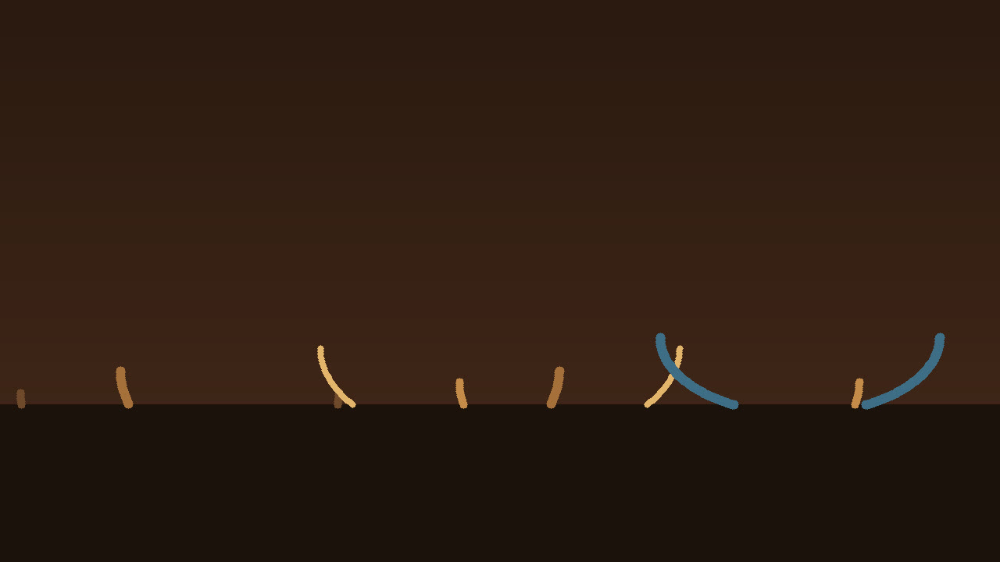

Four kits · two variations · 32-bar arrangements
Relay
Rhythmic interaction, motif development, controlled harmonic movement, and instrumental dialogue. The BPM range is a project choice, not a claim that these files are authentic genre productions.

counterline lead keys bass drums
Reading the MIDI.
Drums use channel 10 and the map in this catalog. There is no separate percussion part. Bass is monophonic, MIDI 28 to 55. Keys are MIDI 48 to 81, at most five notes. Lead is monophonic, MIDI 60 to 84. Counterline is monophonic, MIDI 48 to 81. C4 is 60.
Kit map
- k01 Relay, 104 BPM, D dorian, tonic D. Parts are 8 bars. The arrangement is 32 bars. The kick answers the snare: beat 1, the last 16th of beat 2, and the and of 3. The lead states D F A, then adds C, then turns the cell upside down. The counterline speaks in the lead's rests and moves down. Keys hold Dm9, G9, Cmaj7, and Dm7. Variation B comps those same chords late in each bar, in a higher voicing. Limitations: Variation A and variation B are alternatives. Do not stack them. Do not mix parts from different kits: the tempos and collections differ. The 32-bar arrangement uses variation A only. Closed and open hats never overlap, and no hat-choke controller is written. Lead and counterline are separate lines. Do not treat one as a copy of the other.
- k02 Trade, 128 BPM, A mixolydian, tonic A. Parts are 8 bars. The arrangement is 32 bars. Straight 16th hats and a kick that sits on the 16th before beat 2. The lead takes the even bars. The counterline takes the odd bars. Keys enter on beat 2: A9, Dmaj7, Bm7, Em9. Variation B breaks the trade into overlapping short phrases and comps on the and of 1. Limitations: Variation A and variation B are alternatives. Do not stack them. Do not mix parts from different kits: the tempos and collections differ. The 32-bar arrangement uses variation A only. Closed and open hats never overlap, and no hat-choke controller is written. Lead and counterline are separate lines. Do not treat one as a copy of the other. Counterline variation B has one flagged G#4.
- k03 Grouped, 92 BPM, F lydian, tonic F. Parts are 8 bars. The arrangement is 32 bars. Accents sit on a 3+3+2 sixteenth grid, twice per bar. The meter stays 4/4. The lead uses that grid and lets B, the raised fourth, into the line. The counterline holds long notes against the grid. Keys hold Fmaj9 for four bars, then Cmaj7 for four. Variation B stabs those chords on the grid. Limitations: Variation A and variation B are alternatives. Do not stack them. Do not mix parts from different kits: the tempos and collections differ. The 32-bar arrangement uses variation A only. Closed and open hats never overlap, and no hat-choke controller is written. Lead and counterline are separate lines. Do not treat one as a copy of the other. The 3+3+2 pattern is an accent grid. It does not change the meter.
- k04 Climb, 116 BPM, Bb major, tonic Bb. Parts are 8 bars. The arrangement is 32 bars. Half-time snare on beat 3, with the kick on beat 1 and the and of 2. The lead climbs by step and then by third. The counterline descends in the same bars. Keys enter on the and of beat 1: Bbmaj7, Gm9, Ebmaj9, F9. Variation B shortens the keys and moves the lead onto offbeats. Limitations: Variation A and variation B are alternatives. Do not stack them. Do not mix parts from different kits: the tempos and collections differ. The 32-bar arrangement uses variation A only. Closed and open hats never overlap, and no hat-choke controller is written. Lead and counterline are separate lines. Do not treat one as a copy of the other. Bass variation B has one flagged B2.
There is no reference-only part. All five roles are core. The arrangements reuse those files. Variation A of each role has its own attack pattern. The four kits are not transpositions of one phrase.
Article draft
DRAFT. Jazz Fusion is a note-only MIDI construction kit
Tags: midi, jazz-fusion, music-production, composition, harmony
Use either the combined arrangement or the separate parts. Do not stack the part files on top of the combined file.
Files
| Part | Role | Var | Count | BPM | Bars | Notes |
|---|---|---|---|---|---|---|
| k01.drums.a | drums | a | core | 104 | 8 | 81 |
| k01.bass.a | bass | a | core | 104 | 8 | 27 |
| k01.keys.a | keys | a | core | 104 | 8 | 18 |
| k01.lead.a | lead | a | core | 104 | 8 | 26 |
| k01.counterline.a | counterline | a | core | 104 | 8 | 16 |
| k01.drums.b | drums | b | core | 104 | 8 | 56 |
| k01.bass.b | bass | b | core | 104 | 8 | 18 |
| k01.keys.b | keys | b | core | 104 | 8 | 72 |
| k01.lead.b | lead | b | core | 104 | 8 | 21 |
| k01.counterline.b | counterline | b | core | 104 | 8 | 14 |
| k02.drums.a | drums | a | core | 128 | 8 | 112 |
| k02.bass.a | bass | a | core | 128 | 8 | 28 |
| k02.keys.a | keys | a | core | 128 | 8 | 18 |
| k02.lead.a | lead | a | core | 128 | 8 | 16 |
| k02.counterline.a | counterline | a | core | 128 | 8 | 12 |
| k02.drums.b | drums | b | core | 128 | 8 | 88 |
| k02.bass.b | bass | b | core | 128 | 8 | 18 |
| k02.keys.b | keys | b | core | 128 | 8 | 72 |
| k02.lead.b | lead | b | core | 128 | 8 | 21 |
| k02.counterline.b | counterline | b | core | 128 | 8 | 12 |
| k03.drums.a | drums | a | core | 92 | 8 | 48 |
| k03.bass.a | bass | a | core | 92 | 8 | 24 |
| k03.keys.a | keys | a | core | 92 | 8 | 9 |
| k03.lead.a | lead | a | core | 92 | 8 | 20 |
| k03.counterline.a | counterline | a | core | 92 | 8 | 9 |
| k03.drums.b | drums | b | core | 92 | 8 | 72 |
| k03.bass.b | bass | b | core | 92 | 8 | 13 |
| k03.keys.b | keys | b | core | 92 | 8 | 108 |
| k03.lead.b | lead | b | core | 92 | 8 | 13 |
| k03.counterline.b | counterline | b | core | 92 | 8 | 10 |
| k04.drums.a | drums | a | core | 116 | 8 | 42 |
| k04.bass.a | bass | a | core | 116 | 8 | 26 |
| k04.keys.a | keys | a | core | 116 | 8 | 19 |
| k04.lead.a | lead | a | core | 116 | 8 | 23 |
| k04.counterline.a | counterline | a | core | 116 | 8 | 16 |
| k04.drums.b | drums | b | core | 116 | 8 | 48 |
| k04.bass.b | bass | b | core | 116 | 8 | 18 |
| k04.keys.b | keys | b | core | 116 | 8 | 76 |
| k04.lead.b | lead | b | core | 116 | 8 | 17 |
| k04.counterline.b | counterline | b | core | 116 | 8 | 13 |
Arrangements
| Kit | BPM | Bars | What the file contains |
|---|---|---|---|
| k01 | 104 | 32 | Relay variation A arranged over 32 bars. Each musical track is one or more copies of the 8-bar part, placed at the listed bar offsets. |
| k02 | 128 | 32 | Trade variation A arranged over 32 bars. Each musical track is one or more copies of the 8-bar part, placed at the listed bar offsets. |
| k03 | 92 | 32 | Grouped variation A arranged over 32 bars. Each musical track is one or more copies of the 8-bar part, placed at the listed bar offsets. |
| k04 | 116 | 32 | Climb variation A arranged over 32 bars. Each musical track is one or more copies of the 8-bar part, placed at the listed bar offsets. |
Recorded reading
Bars 9-16 of the Relay arrangement. Eight bars at 104 BPM. All five variation A parts. The encoded MP3 is 18.495 seconds. preview, not a master. The film is 18.461 seconds and shows preview, not master.
No program changes are encoded. A conventional GM player will normally use its default piano program for pitched channels unless configured otherwise; compatible GM channel 10 percussion is treated separately. Player behavior may vary.
No human listening audition was performed for this build.
The GitHub repository is https://github.com/mizcausevic-dev/jazz-fusion and it is public. The catalog address is https://mizcausevic-dev.github.io/jazz-fusion/ .